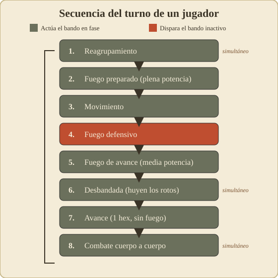
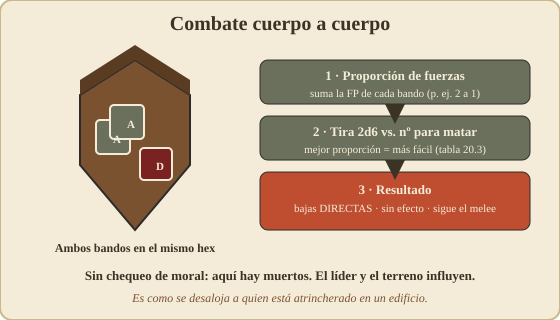

02 – Secuencia de juego¶
⟵ Introducción · Índice · Siguiente: Movimiento ⟶
La idea central¶
Todo Squad Leader gira en torno a una secuencia de fases muy estricta. Entender y respetar el orden de las fases es, literalmente, saber jugar. La mayoría de los errores de los principiantes son hacer algo "fuera de fase".
El juego se desarrolla en turnos de juego. Cada turno de juego se divide en dos turnos de jugador: primero el del bando activo (el que tiene la iniciativa ese turno) y luego el del bando contrario. Después el marcador de turno avanza y se repite, hasta el límite que fije el escenario.
Durante el turno de un jugador, ese jugador es el "atacante" o bando en fase, y el otro es el "defensor" o bando inactivo — pero ojo: el defensor no se queda quieto, tiene fases en las que dispara reaccionando.
Las fases de un turno de jugador¶

En el sistema clásico, el turno de un jugador sigue este orden (regla 4.0). Apréndetelo de memoria:
1. Reagrupamiento (Rally Phase)
2. Fuego preparado (Prep Fire Phase)
3. Movimiento (Movement Phase)
4. Fuego defensivo (Defensive Fire Phase) ← dispara el bando INACTIVO
5. Fuego de avance (Advancing Fire Phase)
6. Desbandada (Rout Phase)
7. Avance (Advance Phase)
8. Combate cuerpo a cuerpo (Close Combat / Melee Phase)
Vamos una por una. En todas, salvo que se diga lo contrario, actúa el bando en fase.
Matiz de la carta de secuencia (regla 4.0): las fases de reagrupamiento (1), desbandada/huida (6) y cuerpo a cuerpo (8) son de actuación simultánea: se resuelven a la vez para ambos bandos, no solo para el jugador activo.
En cada fase te indico qué PUEDES hacer (✅), qué NO puedes (❌) y el error de timing típico (⚠️) que conviene evitar.
1. Fase de reagrupamiento (Rally)¶
Es el momento de recuperar unidades rotas y reorganizar.
✅ Puedes: - Intentar reagrupar tus unidades rotas (devolverlas a buena orden) — ver 05 – Moral y liderazgo. - Transferir armas de apoyo entre unidades del mismo hex y reordenar apilamientos. - Que un líder ayude a reagrupar a las unidades de su hex con su modificador.
❌ No puedes: - Mover unidades de un hex a otro (eso es la fase de movimiento). - Reagrupar bien si no hay un líder cercano: sin él, el intento es mucho menos fiable y los fallos pueden agravarse.
⚠️ Error típico: olvidar reagrupar y dejar que tus unidades rotas se acumulen turno tras turno. Sin tropas en buena orden no hay quien dispare ni maniobre.
2. Fase de fuego preparado (Prep Fire)¶
Tus unidades pueden disparar antes de moverse, a plena potencia.
✅ Puedes: - Disparar con cualquier unidad en buena orden contra blancos con línea de visión. - Combinar el fuego de varias unidades del mismo hex en un solo ataque más potente.
❌ No puedes: - Mover después una unidad que haya disparado en esta fase: queda marcada como que ya ha usado su acción de fuego y se queda quieta el resto del turno. - Disparar con unidades rotas (no disparan nunca) ni con las inmovilizadas (pinned).
⚠️ Error típico: disparar en prep fire con una unidad que en realidad necesitabas mover. La regla de oro de cada turno con cada unidad: o disparas fuerte (y te quedas), o te mueves (y disparas flojo en la fase 5). No las dos cosas.
3. Fase de movimiento (Movement)¶
El bando en fase mueve las unidades que no dispararon en prep fire.
✅ Puedes: - Gastar los puntos de movimiento (MP) de cada unidad entrando en hexes según el coste del terreno (ver 03 – Movimiento). - Mover una unidad sola o una pila entera junta. - Cargar/soltar armas de apoyo (con su coste).
❌ No puedes: - Mover unidades que dispararon en prep fire. - Mover un poco con cada unidad por turnos: se mueve una unidad/pila de principio a fin de su recorrido y solo entonces empieza la siguiente. Esto es clave, porque el defensor reacciona durante cada recorrido. - Mover unidades rotas hacia el enemigo (las rotas solo huyen, en la fase 6).
⚠️ Error típico: mover a campo abierto sin haber comprobado quién te ve. Cada hex que cruzas a la vista del enemigo es una oportunidad de fuego defensivo contra ti.
4. Fase de fuego defensivo (Defensive Fire)¶
Dispara el bando INACTIVO (el que no tiene el turno). Es el contrapeso que hace que atacar sea arriesgado. Es la fase más sutil del juego, así que va con más detalle.
El defensor reacciona al movimiento enemigo en dos momentos (conceptualmente):
- Fuego de oportunidad / "primer disparo" (first fire): mientras una unidad enemiga se mueve a la vista, una unidad defensora gasta su disparo para tirarle durante el recorrido. Disparar a algo en movimiento por terreno descubierto da ventaja al tirador (modificador a favor).
- Fuego defensivo "final" (final fire): disparar a unidades enemigas que terminaron su movimiento a la vista.
✅ Puedes (como defensor): - Elegir cuándo disparar a una unidad que cruza (en el hex que más te convenga). - Combinar fuego de tu hex contra el que pasa.
❌ No puedes: - Disparar infinitas veces: una unidad que dispara queda agotada para el resto del turno enemigo (con matices de first/final fire según tu reglamento). - Disparar sin línea de visión.
⚠️ Error típico: reservar siempre el disparo "por si viene algo mejor" y no usarlo nunca; o al revés, gastarlo en el primer blanco flojo y quedarte sin respuesta cuando llega el asalto serio. Disparar además revela tu posición.
Mentalidad: el defensor "guarda" sus disparos para el momento de máxima exposición del atacante (cruzando abierto, apilado). El atacante avanza por cobertura y tras humo para que el defensor nunca tenga un buen disparo.
5. Fase de fuego de avance (Advancing Fire)¶
Vuelve a disparar el bando en fase: las unidades que se movieron pueden disparar ahora, pero con potencia reducida (×½), porque vienen de moverse.
✅ Puedes: - Disparar con las unidades que movieron este turno (a media potencia). - Hostigar o rematar a defensores que ya estén tocados.
❌ No puedes: - Disparar a plena potencia (eso era prep fire). - Disparar con unidades que se quedaron sin línea de visión tras moverse.
⚠️ Error típico: confundir esta fase con el prep fire. Aquí el fuego es flojo; su valor es el "fuego y movimiento" (avanzas y mantienes algo de presión), no matar.
6. Fase de desbandada (Rout)¶
Las unidades rotas que estén adyacentes a (o a la vista de) enemigos en buena orden están obligadas a huir hacia lugar seguro.
✅ / obligaciones: - Mover las unidades rotas alejándose del enemigo, hacia cobertura y retaguardia, preferiblemente hacia un líder que las reagrupe el turno siguiente.
❌ Riesgo: - Si una unidad rota no tiene ruta de huida válida (rodeada, sin cobertura alcanzable, o tendría que pasar por más fuego), es eliminada (Failure to Rout).
⚠️ Error táctico (a tu favor): si rodeas al enemigo, sus rotos no podrán huir y se destruirán solos. Cercar vale más que disparar.
7. Fase de avance (Advance)¶
El bando en fase puede mover un hex cada unidad (incluso las que ya dispararon).
✅ Puedes: - Reposicionar 1 hex a cubierto tras haber disparado. - Entrar en el hex de un enemigo para forzar el combate cuerpo a cuerpo.
❌ No puedes: - Mover más de un hex. - Hacerlo con unidades rotas (solo huyen).
Ventaja clave: el avance NO provoca fuego defensivo. Es el "último salto" seguro: para meterte en un edificio o cerrar contra el enemigo sin comerte un disparo de reacción.
⚠️ Error típico: intentar cruzar una calle entera en la fase de movimiento (donde te disparan) en vez de fijar al defensor con fuego y dar el último salto en avance.
8. Fase de combate cuerpo a cuerpo (Close Combat / Melee)¶

Si hay unidades de ambos bandos en el mismo hex, se resuelve el combate cuerpo a cuerpo (regla 20.3).
Cómo va: - Se comparan las fuerzas (proporción) en el hex y se tira: hay un número objetivo para matar según la proporción de fuerzas. - Es letal y directo: las bajas son muertos, no hay chequeo de moral. - Puede resolverse en una ronda o prolongarse como melee al turno siguiente si ninguno cede. - El terreno (edificio) y los líderes influyen.
Para qué sirve: desalojar a un enemigo tan atrincherado (edificio, búnker) que el fuego no basta para echarlo. El problema es llegar vivo hasta su hex.
Diagrama resumen del turno¶
TURNO DE JUEGO
├── Turno del Jugador A (bando en fase = A)
│ 1. Reagrupamiento ........ A recupera unidades rotas (simultáneo)
│ 2. Fuego preparado ....... A dispara a plena potencia (queda inmóvil)
│ 3. Movimiento ............ A mueve ──┐
│ 4. Fuego defensivo ....... B dispara ◄┘ (reacciona al movimiento de A)
│ 5. Fuego de avance ....... A dispara a ½ (los que movieron)
│ 6. Desbandada ............ unidades rotas huyen (simultáneo)
│ 7. Avance ................ A mueve 1 hex (sin provocar fuego)
│ 8. Cuerpo a cuerpo ....... se resuelven hexes compartidos (simultáneo)
│
└── Turno del Jugador B (bando en fase = B)
... mismas 8 fases, con los papeles cambiados ...
→ avanza el marcador de turno y se repite
Los cinco errores de timing más comunes¶
- Mover y luego querer disparar a plena potencia. O prep fire (sin moverte), o moverte y disparar en advancing fire a ½.
- Olvidar el fuego defensivo del rival. Traza la LOS enemiga antes de cruzar.
- No reagrupar a tiempo. Lleva un líder a la retaguardia para recomponer en la fase 1.
- Mover toda una pila junta a la vista. Un disparo afecta a todo el hex: dispersa al cruzar abierto.
- No usar la fase de avance. El último hex a cubierto se da en advance (sin fuego), no en movimiento.